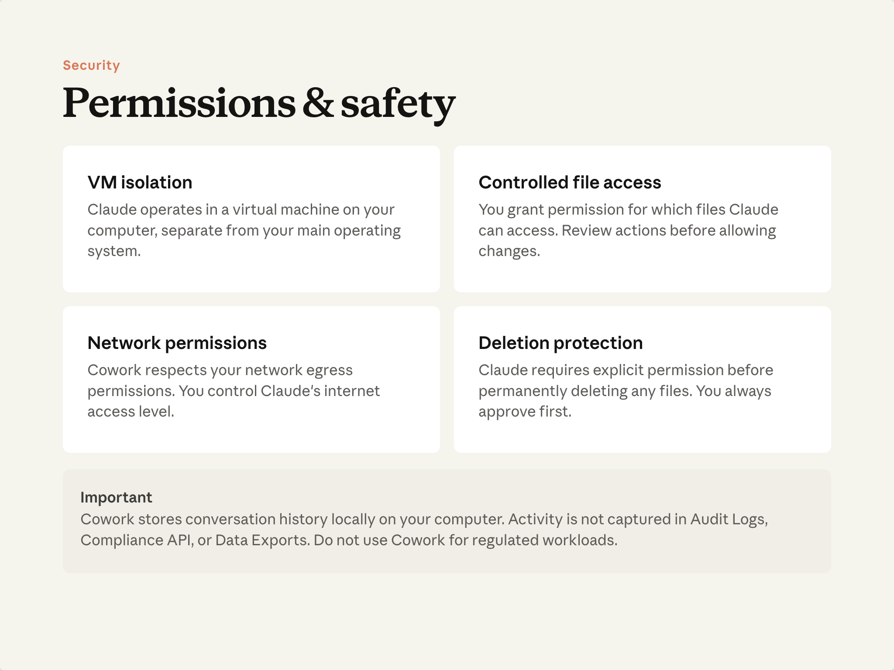
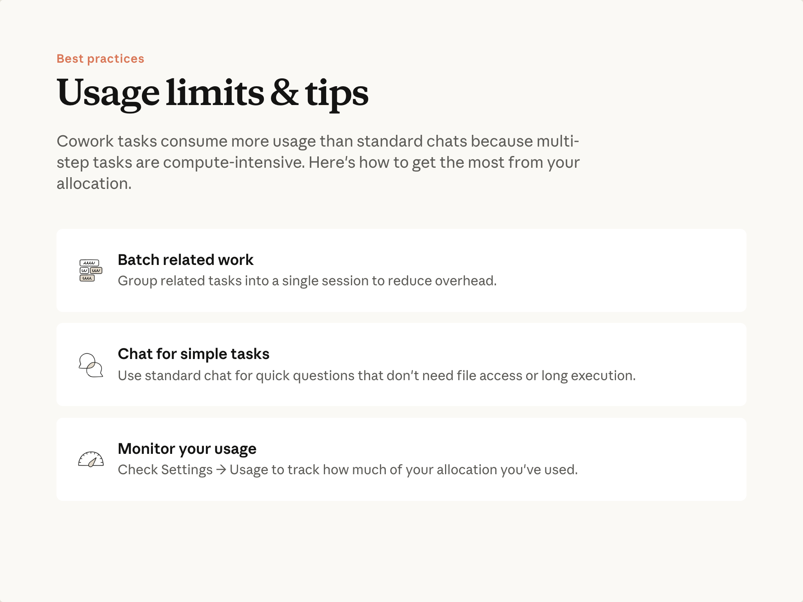

예상 소요 시간: 10분
학습 목표
이 수업을 마치면 다음을 할 수 있습니다:
- Cowork가 작동하는 안전 경계를 설명할 수 있습니다
- 사용량 할당을 효과적으로 관리할 수 있습니다
- 결과물을 실행하기 전에 검토하는 습관을 기를 수 있습니다
권한 및 안전

Cowork는 실제 파일을 읽고 쓰며 실제 시스템에 연결할 수 있습니다. 이를 규정하는 경계는 다음과 같습니다.
- 격리된 실행 환경 — 작업은 운영 체제와 분리된 격리된 환경에서 실행됩니다. Cowork는 허가되지 않은 항목에는 접근할 수 없습니다.
- 제어된 파일 접근 — Cowork가 볼 수 있는 폴더를 직접 결정합니다. 권한이 없으면 접근할 수 없습니다.
- 네트워크 정책 준수 — Cowork는 조직의 네트워크 규칙을 따릅니다. 제한된 환경은 그대로 유지됩니다.
- 삭제 시 승인 필요 — 영구 삭제는 명시적인 승인이 필요합니다. 항상 먼저 확인 메시지가 표시됩니다.
미리 알아두어야 할 한 가지
Cowork 대화 기록은 사용자 기기에 로컬로 저장됩니다. 감사 로깅 및 규정 준수 기능에 대한 최신 정보는 플랜 문서를 확인하세요. 특히 규제 요건이 있는 업무를 처리하는 경우 더욱 중요합니다.
Cowork 결과물 검토하기
결과물을 전달하거나 실행하기 전에 반드시 검토하세요. 결과물이 완성도 높아 보일수록 다시 한번 확인할 가치가 있습니다. Cowork의 자신감은 작업이 맞든 틀리든 동일합니다. 차이를 잡아내는 것은 여러분의 검토입니다.
습관화할 것: 파일을 열어보세요. 숫자를 확인하세요. 추론의 한 줄기를 따라가 보세요.
이 습관과 AI와 효과적으로 협업하는 데 필요한 역량에 대한 자세한 내용은 AI 유창성 과정 을 참조하세요.
사용량 관리

Cowork는 채팅보다 할당량을 더 많이 사용합니다. 다단계, 장시간 실행 작업은 단일 대화보다 컴퓨팅 집약적입니다. 다음 습관을 통해 효율적으로 사용할 수 있습니다:
- 관련 작업을 묶어서 처리하세요. 새 세션을 시작하면 오버헤드가 발생합니다. 관련 작업이 여러 개 있다면 별도 세션이 아닌 하나의 세션에서 처리하세요.
- 적합한 작업에는 채팅을 사용하세요. 파일, 연결된 도구, 또는 실제 출력 파일이 필요하지 않은 작업이라면 채팅이 더 빠르고 리소스 소모가 적습니다. 1강에서의 질문—이 작업에 내 파일, 도구, 실제 출력이 필요한가?—은 사용량 측면에서도 유용한 질문입니다.
- 사용 현황을 모니터링하세요. Cowork 설정에는 사용량 확인 기능이 포함되어 있습니다. 특히 습관을 형성하는 중에는 주기적으로 확인하세요.
올바른 모델 선택하기
사용하는 모델도 소비량에 영향을 미칩니다. Claude 모델은 세 가지 성능 계층으로 제공됩니다— Opus , Sonnet , 그리고 Haiku —이들은 성능과 비용을 서로 절충합니다. Opus는 가장 복잡한 다단계 작업을 처리하며 할당량을 가장 많이 사용합니다. Haiku는 가장 빠르고 가볍습니다. Sonnet은 일상적인 작업을 위한 합리적인 기본값으로 중간에 위치합니다.
모든 작업에 최고 옵션을 기본으로 사용하기보다는 작업에 필요한 모델을 선택하세요.
각 계층의 차이점과 적합한 사용 시나리오에 대한 자세한 내용은 올바른 Claude 모델 선택하기 를 참조하세요. 플랜별 사용량 및 할당량 작동 방식은 플랜 및 가격 을 참조하세요.
수업 되돌아보기
- Cowork의 감사 및 규정 준수 특성이 중요한 워크플로가 있나요? 있다면 플랜의 최신 문서를 확인하세요.
- 채팅으로도 충분히 처리할 수 있는 작업을 Cowork에서 실행하고 있지는 않나요? 이것이 할당량을 절약하는 쉬운 방법입니다.
- 마지막으로 Cowork 결과물을 열어서 전달하기 전에 실제로 내용을 확인한 게 언제였나요?
다음 단계
마지막 수업: 일반적인 문제에 대한 빠른 문제 해결 방법과 학습한 내용을 바탕으로 발전시킬 다음 단계 순서입니다.
피드백
피드백을 여기 에서 공유해 주세요.
저작권 및 라이선스
Copyright 2026 Anthropic. All rights reserved.